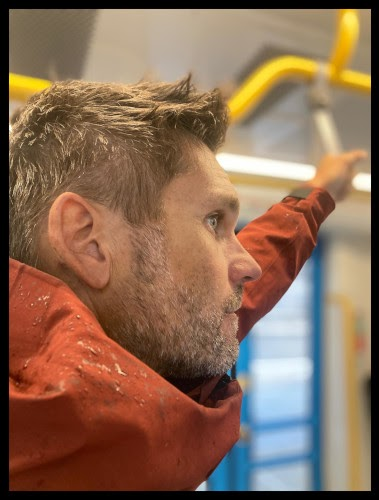

Osebni pristop k jadranju
Individualni tečaji jadranja, vzdrževanje plovila in skiperiranje/transfer — vse z izkušnjami z več kot 20.000 prejadranih navtičnih milj.
Na moji jadrnici ali na vašem plovilu — v desetih dneh do samostojnega jadranja.
Preberi več →Izbira in najem plovila kjer koli na svetu ali transfer vašega plovila.
Preberi več →V desetih dneh individualnega tečaja vas lahko naučim vsega, kar potrebujete za samostojno jadranje/motoriranje. Tečaj lahko poteka na čudoviti leseni jadrnici, zgrajeni leta 1966, ali pa na plovilu, ki ga najamete sami ali katerega lastnik ste. Tečaji so primerni tudi za otroke.
Celovita skrb za vaše plovilo — od trupa do detajlov.
Kot izkušen kapitan lahko skiperiram in pomagam pri izbiri/najemu plovila (kjer koli na svetu) ali pa poskrbim za transfer vašega plovila.

Prejadral sem več kot 20.000 navtičnih milj in prečil Atlantski ocean, Norveško morje, Mediteransko morje, Jadransko morje, Severno morje, Baltsko morje, Canal du Midi in Belgijski kanal.
Kratek pogled na morje.